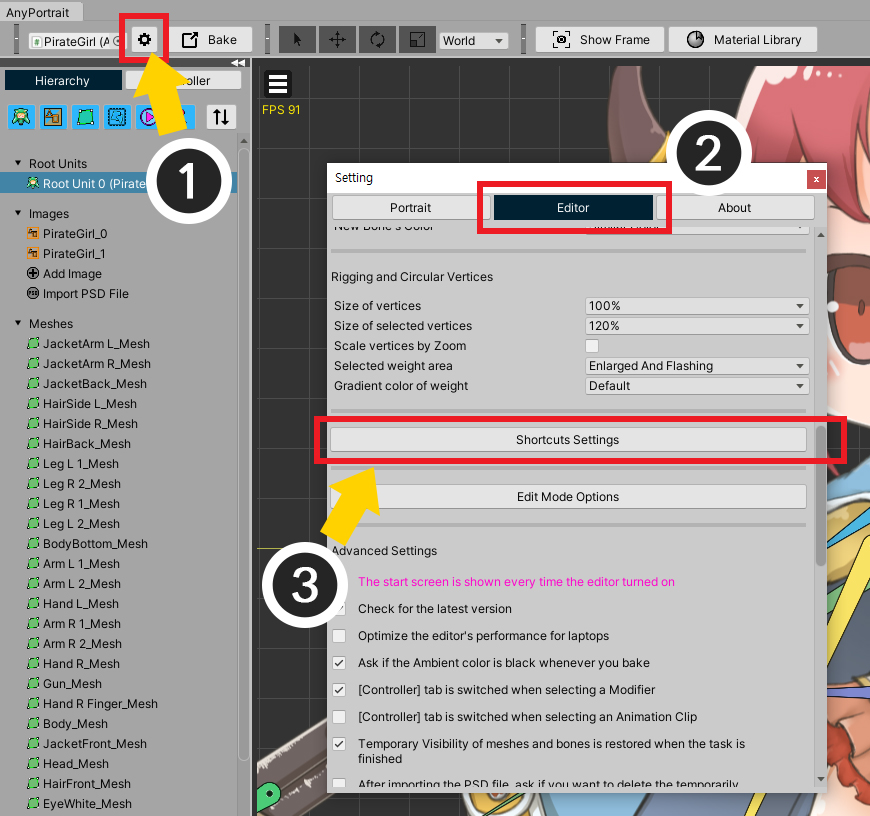

AnyPortrait > Manual > Customize shortcuts
Customize shortcuts
1.3.0
You may need to check the shortcuts used in the AnyPortrait editor or change them to suit you.
This page covers how to check and change the shortcuts used in the editor.

(1) Open the Settings Dialog in AnyPortrait editor.
(2) Select the Editor tab.
(3) Click the Shortcuts Settings button.

You can see all the shortcuts used in the editor.

1. Shortcut list : This is a list of shortcut keys for functions.
2. Restore All Shortcuts : Reset all shortcut settings.
3. Open Shortcuts Manual Page : Opens the Manual Webpage, which introduces a list of shortcuts.
4. Close : Close the dialog.

This is an explanation of the shortcut setting screen.
Some shortcuts cannot be modified.
1. Checkbox for using shortcut : When deactivated, the corresponding shortcut does not work.
2. Function Name : This is the name of the function corresponding to the shortcut key.
3. Special Key : You can set special keys such as Ctrl, Alt, Shift.
(Special keys cannot be set for some functions, but in this case, it works regardless of whether a special key is input or not.)
4. Input Key : This is an input key.
5. Default button : Restore to the default settings.

If the input key is the same as another shortcut, the warning message above appears.
Please set appropriately so that they do not overlap.